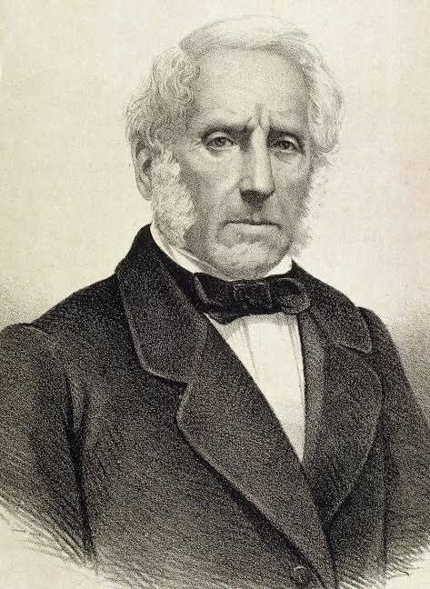
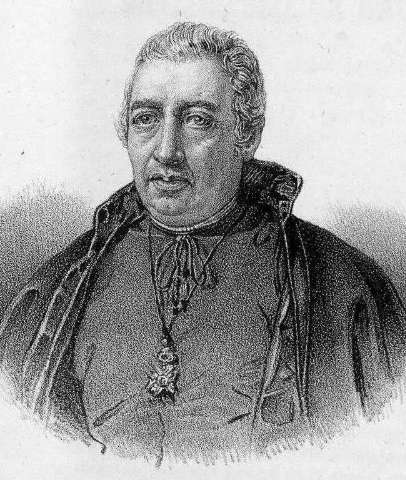

Autori

Alessandro Manzoni

Chi era Alessandro Manzoni?
Alessandro Manzoni è stato un poeta, romanziere e filosofo italiano. È famoso soprattutto per il suo romanzo I promessi sposi, considerato uno dei capolavori della letteratura mondiale e un simbolo del Risorgimento italiano, sia per il suo messaggio patriottico, sia per il ruolo fondamentale che ha avuto nel definire la lingua italiana moderna e unitaria.
I promessi sposi è un romanzo storico italiano, pubblicato per la prima volta nel 1827 in tre volumi, e poi profondamente rivisto fino alla versione definitiva, uscita tra il 1840 e il 1842. Rimane uno dei romanzi più letti e conosciuti della letteratura italiana..
In realtà, Manzoni scrisse una prima versione, intitolata Fermo e Luciatra il 1821 e il 1823. Successivamente la revisionò a fondo, completando il lavoro nel 1825; dopo due anni di correzioni e riletture, il romanzo fu pubblicato nel 1827. Nei primi decenni dell’Ottocento, Manzoni modificò ancora la lingua per l’edizione del 1842, eliminando molti regionalismi lombardi e adottando il dialetto fiorentino, che considerava il modello migliore per un italiano letterario nazionale.
Juan Nicasio Gallego

Chi era Juan Nicasio Gallego?
Juan Nicasio Gallego è stato un importante sacerdote, intellettuale, poeta e figura pubblica spagnola, con ideali liberali e cattolici. Era molto inserito nei circoli letterari e religiosi della Spagna ed era noto per il suo stile retorico e la sua serietà morale.
Diventò sacerdote nel 1804, poi cappellano reale a Madrid nel 1805, e fu anche direttore spirituale dei paggi del Palazzo Reale. Durante il suo periodo a Madrid, entrò in contatto con intellettuali pre-romantici e iniziò a pubblicare poesie sulla rivistaMemorial Literario. Durante l’insurrezione di maggio del 1808 scrisse Influencia del entusiasmo público en las artes.
Successivamente si trasferì a Siviglia e poi a Cadice, dove fu deputato costituente per Zamora e lavorò alle Corti di Cadice, contribuendo alla legge sulla libertà di stampa. Per le sue idee liberali fu perseguitato da Ferdinando VII, imprigionato e poi esiliato per quattro anni. Liberato nel 1820, ricoprì diversi incarichi ecclesiastici e letterari.
Gallego ammirava profondamente I Promessi Sposi e lo considerava un modello sia religioso sia civico, in linea con la sua visione del mondo. Tradusse il romanzo di Manzoni in spagnolo con il titolo Los novios e fu membro della Reale Accademia Spagnola.